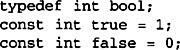
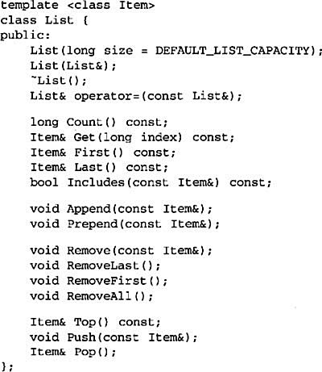
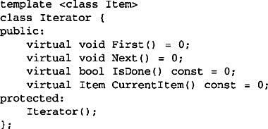
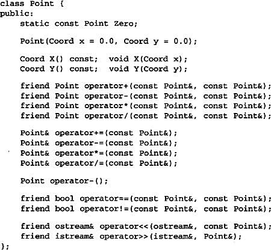
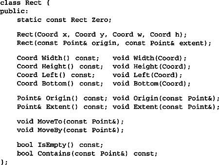

This appendix documents the foundation classes we use in the C++ sample code of several design patterns. We’ve intentionally kept the classes simple and minimal. We describe the following classes:
• List, an ordered list of objects.
• Iterator, the interface for accessing an aggregate’s objects in a sequence.
• ListIterator, an iterator for traversing a List.
• Point, a two-dimensional point.
• Rect, an axis-aligned rectangle.
Some newer C++ standard types may not be available on all compilers. In particular, if your compiler doesn’t define bool, then define it manually as

The List class template provides a basic container for storing an ordered list of objects. List stores elements by value, which means it works for built-in types as well as class instances. For example, List<int> declares a list of ints. But most of the patterns use List to store pointers to objects, as in List<Glyph*>. That way List can be used for heterogeneous lists.
For convenience, List also provides synonyms for stack operations, which make code that uses List for stacks more explicit without defining another class.

The following sections describe these operations in greater detail.
List(long size)
initializes the list. The size parameter is a hint for the initial number of elements.
List(List&)
overrides the default copy constructor so that member data are initialized properly.
~List()
frees the list’s internal data structures but not the elements in the list. The class is not designed for subclassing; therefore the destructor isn’t virtual.
List& operator=(const List&)
implements the assignment operation to assign member data properly.
These operations provide basic access to the list’s elements.
long Count() const
returns the number of objects in the list.
Item& Get (long index) const
returns the object at the given index.
Item& First() const
returns the first object in the list.
Item& Last() const
returns the last object in the list.
void Append(const Item&)
adds the argument to the list, making it the last element.
void Prepend(const Item&)
adds the argument to the list, making it the first element.
void Remove(const Item&)
removes the given element from the list. This operation requires that the type of elements in the list supports the == operator for comparison.
void RemoveFirst()
removes the first element from the list.
void RemoveLast()
removes the last element from the list.
void RemoveAll()
removes all elements from the list.
Item& Top() const
returns the top element (when the List is viewed as a stack).
void Push(const Item&)
pushes the element onto the stack.
Item& Pop()
pops the top element from the stack.
Iterator is an abstract class that defines a traversal interface for aggregates.

The operations do the following:
virtual void First()
positions the iterator to the first object in the aggregate.
virtual void Next()
positions the iterator to the next object in the sequence.
virtual bool IsDone() const
returns true when there are no more objects in the sequence.
virtual Item CurrentItem() const
returns the object at the current position in the sequence.
ListIterator implements the Iterator interface to traverse List objects. Its constructor takes a list to traverse as an argument.
Point represents a point in a two-dimensional Cartesian coordinate space. Point supports some minimal vector arithmetic. The coordinates of a Point are defined as
typedef float Coord;
Point’s operations are self-explanatory.

The static member Zero represents Point (0, 0).
Rect represents an axis-aligned rectangle. A Rect is defined by an origin point and an extent (that is, width and height). The Rect operations are self-explanatory.

The static member Zero is equivalent to the rectangle
Rect(Point(0, 0), Point(0, 0));